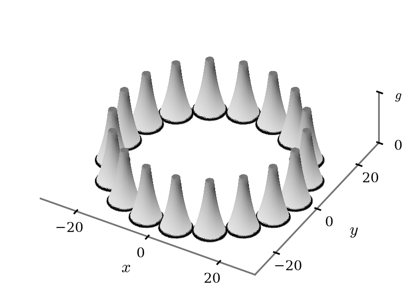

AI agents formally verified the paper's results in Lean 4, released as a public repository; the formalization exposed issues the authors then fixed.
Abstract
We study the Perron extremal solutions of the stationary one-phase Bernoulli problem. These solutions are important in several applications, but not much is known about the regularity of their free boundaries due to their non-variational construction. We show that, in fact, Perron extremal solutions retain some variational features; specifically, they are solutions in the sense of inner variations. We establish this property by showing that extremal solutions arise as infinite-time limits of monotone solutions of the parabolic Bernoulli problem. As a consequence, we are able to describe the structure of singularities for Perron extremal solutions in two dimensions: largest subsolutions have smooth free boundaries, while smallest supersolutions have free boundary points that are either smooth, or whose blow-up limits are two-plane wedges with equal slope.
Problem
Perron extremal solutions of the stationary one-phase Bernoulli free boundary problem are built by a non-variational method, so little is known about the regularity of their free boundaries.
Approach
The authors show that extremal solutions arise as infinite-time limits of monotone solutions of the parabolic Bernoulli problem, obtained through a semilinear approximation. Limits are taken in both the inner-variational and the viscosity sense, and shifted data are used to secure strict ordering for comparison. AI agents formalized the results in Lean 4, and the paper was revised to match the formalization.
Results
Perron extremal solutions are inner variational solutions. In two dimensions, largest subsolutions have smooth free boundaries. Free boundary points of smallest supersolutions are either smooth or have blow-ups that are two-plane wedges with equal slope. The Lean 4 formalization is released with any deviations from the paper documented.

Figure 1. A configuration where minimal supersolution (left), energy minimizer (middle), and maximal subsolution (right) are distinct. The domain is the exterior of a union of N=18 unit disks centered and evenly spaced around a circle of radius r=24 , and the data g is chosen so that the radial solutions centered at each disk just touch their two neighbors. The salient features of this example are